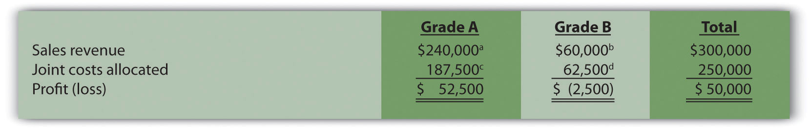
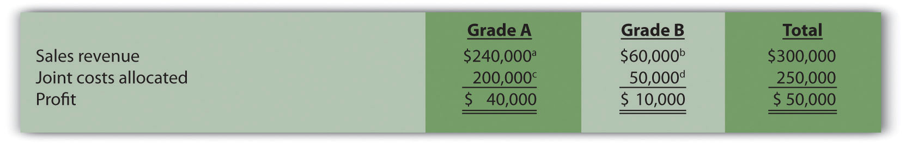

Question: When two or more products are produced from a single input, these products are called joint productsTwo or more products produced from a single input.. The cost of this single input and the related manufacturing process costs are called joint costsThe cost of inputs required to produce joint products.. For example, lumber companies often must deal with joint products (different types of lumber) resulting from one input (a log). How do the concepts of joint products and joint costs help a lumber company establish a cost for each of its products?
Answer: Suppose Oregon Lumber Company takes a log (the single input) and mills it into two types of products: high quality Grade A lumber, and lower quality Grade B lumber. Grade A lumber and Grade B lumber are examples of joint products, and the cost of the logs and related manufacturing process costs are examples of joint costs.
Figure 7.17 "Joint Costs and Joint Product Flows at Oregon Lumber Company" presents the information for Oregon Lumber for the month of June. Joint costs for the month total $250,000. Notice that the split-off pointThe point at which identifiable joint products emerge from the production process. is the point at which identifiable products emerge from the production process. The issue is how to allocate joint costs—the $250,000 in production costs incurred prior to the split-off point—to the resulting joint products.
Two methods are commonly used to allocate these joint costs to the joint products: the physical quantities method and the sales value method. We discuss each of these methods next.
Question: The physical quantities methodA method that allocates joint costs based on a physical measure of output. allocates joint costs based on a physical measure of output. Assume Oregon Lumber produces 600,000 board feet of Grade A lumber and 200,000 board feet of Grade B lumber during June. How would Oregon Lumber use this information to allocate $250,000 in joint production costs to each grade of lumber?
Answer: Oregon Lumber would allocate 75 percent of the joint costs to Grade A lumber (75 percent = 600,000 Grade A board feet ÷ 800,000 total board feet), and 25 percent of the joint costs to Grade B lumber.
Grade A allocation:
$187,500 allocation = $250,000 joint costs × (600,000 Grade A board feet ÷ 800,000 total board feet)Grade B allocation:
$62,500 allocation = $250,000 joint costs × (200,000 Grade B board feet ÷ 800,000 total board feet)Figure 7.18 "Joint Product Profitability for Oregon Lumber Company: Physical Quantities Method" presents the profitability of each joint product for the month using the physical quantities method assuming Grade A lumber sells for $0.40 per board foot and Grade B lumber sells for $0.30 per board foot.
Figure 7.18 Joint Product Profitability for Oregon Lumber Company: Physical Quantities Method
a $240,000 = $0.40 per board foot × 600,000 Grade A board feet.
b $60,000 = $0.30 per board foot × 200,000 Grade B board feet.
c $187,500 = $250,000 joint costs × (600,000 Grade A board feet ÷ 800,000 total board feet).
d $62,500 = $250,000 joint costs × (200,000 Grade B board feet ÷ 800,000 total board feet).
Although Grade B lumber appears to be unprofitable, elimination of Grade B lumber sales would not increase overall profit for Oregon Lumber. Grade B lumber contributes $60,000 to covering joint costs. Thus elimination of Grade B lumber sales would result in a decrease in overall profit of $60,000. The $62,500 in joint cost allocated to Grade B lumber would simply be reallocated to Grade A lumber.
Question: A different approach to allocating joint costs to joint products is the sales value methodA method that allocates joint costs based on the relative sales value of each product at the split-off point., which allocates joint costs based on the relative sales value of each product at the split-off point. How would Oregon Lumber allocate joint production costs using this method?
Answer: Because sales revenue totals $240,000 for Grade A lumber and $60,000 for Grade B lumber, 80 percent of the joint costs are allocated to Grade A lumber (80 percent = $240,000 Grade A revenue ÷ $300,000 total revenue), and 20 percent of the joint costs are allocated to Grade B lumber:
Grade A allocation:
$200,000 allocation = $250,000 joint costs × ($240,000 Grade A sales value ÷ $300,000 total sales value)Grade B allocation:
$50,000 allocation = $250,000 joint costs × ($60,000 Grade B sales value ÷ $300,000 total sales value)Figure 7.19 "Joint Product Profitability for Oregon Lumber Company: Sales" presents the profitability of each joint product for the month using the sales value method, again assuming Grade A lumber sells for $0.40 per board foot, and Grade B lumber sells for $0.30 per board foot.
Figure 7.19 Joint Product Profitability for Oregon Lumber Company: Sales
a $240,000 = $0.40 per board foot × 600,000 Grade A board feet.
b $60,000 = $0.30 per board foot × 200,000 Grade B board feet.
c $200,000 = $250,000 joint costs × ($240,000 Grade A sales value ÷ $300,000 total sales value).
d $50,000 = $250,000 joint costs × ($60,000 Grade B sales value ÷ $300,000 total sales value).
The sales value method assumes that profit as a percent of sales will remain the same across all products. For example, Figure 7.19 "Joint Product Profitability for Oregon Lumber Company: Sales" shows that Grade A lumber has a profit margin ratio of 16.67 percent (= $40,000 profit ÷ $240,000 sales), as does Grade B lumber (= $10,000 profit ÷ $60,000 sales). This method also ensures that joint costs allocated to each product will not exceed sales revenue for each product (unless total joint costs are higher than total revenue).
As you review Figure 7.18 "Joint Product Profitability for Oregon Lumber Company: Physical Quantities Method" and Figure 7.19 "Joint Product Profitability for Oregon Lumber Company: Sales", notice that the total column for both methods of joint cost allocation is the same. The issue is not with the overall results. The issue is how to allocate joint costs to each joint product.
Question: Assume Oregon Lumber Company has the option of processing Grade B lumber further into a finished product by sanding the lumber and painting it with primer. This option is presented in Figure 7.20 "Further Processing of Oregon Lumber Company’s Grade B Lumber". The sanded and painted Grade B lumber sells for $0.45 per board foot rather than $0.30 for the unfinished Grade B lumber. The additional cost to sand and paint the Grade B lumber is $0.05 per board foot. Should Oregon Lumber process Grade B lumber further into finished lumber?
Answer: The answer depends on whether the additional revenue exceeds the additional cost of processing Grade B lumber further. Since the additional revenue of $0.15 per board foot (= $0.45 finished price − $0.30 unfinished price) is greater than the additional $0.05 per board foot processing cost, Oregon Lumber should process the Grade B lumber further into finished lumber. Profit increases $0.10 per board foot as a result of processing further (= $0.15 additional revenue − $0.05 additional cost).
Oregon Lumber will decide whether or not to process Grade B lumber further regardless of how joint costs are allocated to Grade A and Grade B lumber. In a sense, joint costs are sunk costs with respect to this decision, and will not influence future processing decisions. Thus joint costs incurred prior to the split-off point are irrelevant to the decision whether to process further after the split-off point.
Fresh Veggies, Inc., purchased 10,000 pounds of fresh apples from a local grower for $4,000. The apples were separated into high-quality Grade A apples (3,000 pounds) and lower-quality Grade B apples (7,000 pounds). Fresh Veggies sells Grade A apples for $0.80 per pound and Grade B apples for $0.50 per pound.
Solution to Review Problem 7.10.
a $2,400 = $0.80 per pound × 3,000 pounds of Grade A apples.
b $3,500 = $0.50 per pound × 7,000 pounds of Grade B apples.
c $1,200 = $4,000 joint costs × (3,000 pounds of Grade A apples ÷ 10,000 total pounds).
d $2,800 = $4,000 joint costs × (7,000 pounds of Grade B apples ÷ 10,000 total pounds).

a $2,400 = $0.80 per pound × 3,000 pounds of Grade A apples.
b $3,500 = $0.50 per pound × 7,000 pounds of Grade B apples.
c $1,627 (rounded) = $4,000 joint costs × ($2,400 Grade A sales value ÷ $5,900 total sales value).
d $2,373 (rounded) = $4,000 joint costs × ($3,500 Grade B sales value ÷ $5,900 total sales value).
Questions
Brief Exercises
Make-or-Buy Decision. Coffee Mugs, Inc., currently manufactures ceramic coffee mugs. Management is interested in outsourcing production to a reputable manufacturing company that can supply the cups for $2 per unit. Coffee Mugs produces 100,000 mugs each year. Variable production costs are $0.80 and annual fixed costs are $150,000. If production is outsourced, all variable costs and 40 percent of annual fixed costs will be eliminated.
Perform differential analysis using the format presented in Figure 7.2 "Make-or-Buy Differential Analysis for Best Boards, Inc." and explain which alternative is best, Alternative 1 (producing internally) or Alternative 2 (outsourcing).
Product Line Decision. The following segmented annual income statement is for Flash Drive, Inc.:
For items A, B, and C, assign allocated fixed costs to each product line based on sales revenue for each product line as a proportion of total sales revenue. For example, the 1 Gig product will be assigned 10 percent of allocated fixed costs (= $1,000,000 in 1 Gig sales revenue ÷ $10,000,000 total sales revenue), or $110,000 (=$1,100,000 total allocated fixed costs × 10 percent). For items D, E, and F, calculate the profit or loss for each product line.
Customer Decision. Consulting Group LLC has two customers. Customer One generates $150,000 in income after direct fixed costs are deducted, and Customer Two generates $200,000 in income after direct fixed costs are deducted. Allocated fixed costs total $300,000 and are assigned 30 percent to Customer One and 70 percent to Customer Two based on several different cost drivers. Total allocated fixed costs remain the same regardless of how these costs are assigned to customers.
Calculate the amount of allocated fixed costs to be assigned to each customer, and determine the profit or loss for each customer. Should Consulting Group drop Customer Two? Explain.
Constrained Resources. Deal, Inc., produces two types of computers: Vortex and Zoom. The computers are produced in separate departments and sent to the quality testing department before being packaged and shipped. A labor-hour bottleneck has been identified in the quality testing department due to the high skill requirements of the job. Deal, Inc., would like to optimize its use of labor hours by producing the most profitable computer. Based on the information shown, calculate the contribution margin per quality testing labor hour for each product:
| Quality Testing Labor Hours | Contribution Margin | |
| Vortex | 0.50 | $600 |
| Zoom | 0.40 | 500 |
Exercises: Set A
Make-or-Buy Decision. Wheels, Inc., currently manufactures its own custom rims for automobiles. Management is interested in outsourcing production of these rims to a reputable manufacturing company that can supply the rims for $80 per unit. Wheels, Inc., incurs the following annual production costs to produce 10,000 rims internally.
If production is outsourced, all variable production costs, factory building and equipment lease costs, and factory insurance costs will be eliminated. The production supervisor’s salary cost will remain regardless of the decision to outsource or to produce internally because the supervisor recently signed a long-term contract with Wheels, Inc.
Required:
Product Line Decision. The following monthly segmented income statement is for Durango Company.
Management is concerned about the losses associated with product line A and is considering dropping this product line. Allocated fixed costs are assigned to product lines based on sales. If product line A is eliminated, total allocated fixed costs are assigned to the remaining product lines, and all variable and direct fixed costs for product line A will be eliminated.
Required:
Customer Decision. The following customer segmented quarterly income statement is for Accounting Associates.
Management is concerned about the significant losses associated with the Nguyen account and would like to drop this customer. Allocated fixed costs are assigned to customers based on sales revenue. If Nguyen is dropped, total allocated fixed costs are assigned to the remaining customers, and all variable and direct fixed costs for the Nguyen account will be eliminated.
Required:
Special Order Decision: Operating with Idle Capacity. The following monthly financial data are for RadioCom, Inc., a maker of handheld VHF radios. RadioCom produces and sells 5,000 radios each month to regular customers.
RadioCom received an offer from the Coast Guard Auxiliary to purchase 1,000 radios next month for $75 per unit. RadioCom can produce up to 7,000 radios a month, so the special order would not affect regular customer sales. Variable costs per radio will remain at $60. This special order will have no effect on monthly fixed costs.
Required:
Special Order Decision: Operating at Full Capacity. The following monthly financial data are for RadioCom, Inc., a maker of handheld VHF radios. RadioCom produces and sells 5,000 radios each month to regular customers.
RadioCom received an offer from the Coast Guard Auxiliary to purchase 1,000 radios next month for $75 per unit. RadioCom can only produce up to 5,000 radios a month, so the special order would result in reduced sales to regular customers. Variable costs per radio will remain at $60. This special order will have no effect on monthly fixed costs.
Required:
Target Costing. Quality Sounds, Inc., makes speakers and headphones for high-end sound systems. The marketing department has identified a market for a specific type of headphones that Quality Sounds does not currently produce, and expects to be able to sell each pair for $150. Management requires a profit of 45 percent of the selling price.
Required:
Determine the highest cost (target cost) management would be willing to accept to produce this product.
Constrained Resources. Cycle, Inc., produces three types of bicycles: racer, cruiser, and climber. The bikes are produced in separate departments and sent to the quality testing department before being packaged and shipped. A labor-hour bottleneck has been identified in the quality testing department due to the high skill requirements of the job. Cycle, Inc., would like to optimize its use of labor hours by producing the two most profitable bikes. Information for each bike follows.
| Quality Testing Labor Hours | Price | Variable Cost | |
| Racer | 1.25 | $1,000 | $400 |
| Cruiser | 1.00 | 500 | 300 |
| Climber | 1.00 | 800 | 450 |
Required:
Qualitative Factors. For each of the following independent scenarios, identify at least one qualitative factor that should be considered before making the decision.
Allocating Joint Costs (Appendix). Clemson Products produces two joint products, product Y and Z. Prior to the split-off point, the company incurred $60,000 in joint costs. Clemson Products produced 10,000 yards of product Y and 30,000 yards of product Z produced. Product Y sells for $4 per yard and product Z sells for $2 per yard.
Required:
Exercises: Set B
Make-or-Buy Decision. Quality Glass currently manufactures windshields for automobiles. Management is interested in outsourcing production of these windshields to a reputable manufacturing company that can supply the windshields for $45 per unit. Quality Glass incurs the following annual production costs to produce 15,000 windshields internally.
If production is outsourced, all variable production costs will be eliminated, and 80 percent of fixed production costs will be eliminated. Regardless of the decision to outsource or to produce internally, 20 percent of fixed production costs will remain .
Required:
Product Line Decision. The following segmented annual income statement is for Office Express.
Management is concerned about the significant losses associated with the computers product line and would like to drop this product line. Allocated fixed costs are assigned to product lines based on sales. If the computers product line is eliminated, total allocated fixed costs are assigned to the remaining product lines, and all variable and direct fixed costs for the computers product line will be eliminated.
Required:
Customer Decision. The following customer segmented annual income statement is for Management Consulting, Inc.
Management is concerned about the losses associated with the Apple LLP account and would like to drop this customer. Allocated fixed costs are assigned to customers based on sales revenue. If Apple LLP is dropped, total allocated fixed costs are assigned to the remaining customers, and all variable and direct fixed costs for the Apple LLP account will be eliminated.
Required:
Special Order Decision: Operating with Idle Capacity. The following monthly financial data are for Sport Socks, Inc., a maker of socks for runners. Sport Socks makes and sells 40,000 pairs each month to regular customers.
Sport Socks received an offer from a large sporting goods store to purchase 15,000 socks next month for $0.90 per pair. Sport Socks can produce up to 60,000 pairs of socks a month, so the special order would not affect regular customer sales. Variable costs per pair will remain at $0.70. This special order will cause fixed costs to increase by $6,000 for next month.
Required:
Special Order Decision: Operating at Full Capacity. The following monthly financial data are for Sport Socks, Inc., a maker of socks for runners. Sport Socks makes and sells 40,000 pairs each month to regular customers.
Sport Socks received an offer from a large sporting goods store to purchase 15,000 socks next month for $0.90 per pair. Assume Sport Socks can only produce up to 40,000 pairs of socks each month. Thus any special orders would result in reduced sales to regular customers. However, fixed costs will not change as a result of the special order.
Required:
Target Costing. Nature Wood, Inc., makes wood tables for commercial use. The marketing department has identified a market for a specific table that the company does not currently produce, and it expects that each table could be sold for $1,000. Management requires a profit of 30 percent of the selling price.
Required:
Determine the highest cost (target cost) management would be willing to accept to produce this product.
Constrained Resources. Ratcliff Enterprises produces three types of computers; laptop, desktop, and palmtop. A machine-hour bottleneck has been identified in the production department. Ratcliff would like to optimize its use of machine hours by producing the two most profitable computers. Information for each computer follows.
| Production Machine Hours | Price | Variable Cost | |
| Laptop | 2.00 | $1,200 | $900 |
| Desktop | 1.00 | 800 | 700 |
| Palmtop | 1.25 | 300 | 180 |
Required:
Qualitative Factors. For each of the following independent scenarios, identify at least one qualitative factor that should be considered before making the decision.
Allocating Joint Costs and Evaluating Overall Company Profit (Appendix). Elexor, Inc., produces two joint products, product A and product B. Prior to the split-off point, the company incurred $10,000 in joint costs. Production of product A totaled 400 pounds, and product B totaled 600 pounds. Product A sells for $60 per pound and product B sells for $10 per pound.
Required:
Problems
Make-or-Buy Decision. Vail Door Company currently manufactures doors used in the production of custom homes. Management is interested in outsourcing production of the doors to a reputable manufacturing company that can supply the doors for $90 per unit. Vail incurs the following annual production costs to produce 3,000 doors internally.
If production is outsourced, all variable production costs, equipment lease costs, and factory insurance costs will be eliminated. The production supervisor’s salary cost will remain regardless of the decision to outsource or to produce internally because the supervisor recently signed a long-term contract with the company. The factory lease has five years remaining and cannot be terminated before then.
Required:
Make-or-Buy Decision and Qualitative Factors. Soda Bottling, Inc., currently bottles its own soda drinks. Management is interested in outsourcing the production of bottles to a reputable manufacturing company that can supply the bottles for $0.04 each. Soda Bottling incurs the following monthly production costs to produce 1,000,000 bottles internally.
If production is outsourced, all variable production costs and 70 percent of fixed production costs will be eliminated.
Required:
Product Line Decision. The following monthly segmented income statement is for Hal’s Hardware.
Management is concerned about the low profit associated with the tools product line and is considering dropping this product line. Allocated fixed costs are assigned to product lines based on floor space used by each product line (measured in square feet), resulting in the following percentages for garden supplies, tools, and paint, respectively: 20 percent, 50 percent, and 30 percent. If the tools product line is eliminated, total allocated fixed costs will be assigned as follows: 62.5 percent to garden supplies, and 37.5 percent to paint. All variable and direct fixed costs for the tools product line will be eliminated.
Required:
Product Line Decision and Qualitative Factors. The following annual segmented income statement is for Wax, Inc., a maker of wax for cars, boats, and floors.
Management is concerned about the loss associated with the floors product line and is considering dropping this product line. Allocated fixed costs are assigned to product lines based on direct labor hours associated with each product line, resulting in the following percentages for cars, boats, and floors, respectively: 30 percent, 25 percent, and 45 percent. If the floors product line is eliminated, total allocated fixed costs will be assigned to the remaining products as follows: 55 percent to cars, and 45 percent to boats. All variable and direct fixed costs for the floors product line will be eliminated.
Required:
Customer Decision. The following customer segmented quarterly income statement is for Ciena and Associates, a firm that performs legal services.
Management is concerned about the significant losses associated with the Davis account and would like to drop this customer. Allocated fixed costs are assigned to customers based on sales revenue. If Davis is dropped, total allocated fixed costs are assigned to the remaining customers, and all variable and direct fixed costs for the Davis account will be eliminated.
Required:
Customer Decision and Qualitative Factors. The following customer segmented monthly income statement is for Quality Web, Inc., a firm that provides Web site maintenance services.
Management is concerned about the losses associated with the Murray account and would like to drop this customer. Allocated fixed costs are assigned to customers based on sales revenue. If Murray is dropped, total allocated fixed costs are assigned to the remaining customers, and all variable and direct fixed costs for the Murray account will be eliminated.
Required:
Special Order Decision with Idle Capacity and at Full Capacity. The following quarterly financial data are for Pneumatic, Inc., a maker of compressors. On average, Pneumatic makes 20,000 compressors each quarter.
Pneumatic received an offer from a one-time customer to purchase 5,000 compressors this coming quarter for $275 per unit. Pneumatic can produce up to 30,000 units a quarter, so the special order would not affect regular customer sales. Variable costs per unit will remain at $100. This special order will have no effect on fixed costs.
Required:
Special Order Decision at Full Capacity. The following monthly financial data are for Green Mowers, Inc., a maker of electric lawn mowers. On average, Green Mowers makes 5,000 mowers each month.
Green Mowers received an offer from a one-time customer to purchase 1,000 mowers this coming month for $180 per unit. Green Mowers can produce up to 5,000 units a month, so the special order would reduce regular customer sales. Variable costs per unit will remain at $150. This special order will have no effect on fixed costs.
Required:
Target Costing. Toolmakers, Inc., produces table saws. The marketing department has identified a market for a specific type of table saw that Toolmakers does not currently produce, and expects to be able to sell each saw for $800. Management requires a profit of 60 percent of the selling price.
Required:
Constrained Resources. Instrumental Strings, Inc., produces three types of string instruments: violin, cello, and bass. The instruments are produced in separate departments and sent to the quality testing department before being packaged and shipped. A labor-hour bottleneck has been identified in the quality testing department due to the high skill requirements of the job. Instrumental Strings would like to optimize its use of labor hours by producing the two most profitable instruments. Information for each product follows.
Required:
Assume additional employees are hired and trained for the quality testing department thereby alleviating this constraint. A labor-hour bottleneck has now been identified in the packaging department, which is recognized by management as a crucial department given the fine craftsmanship of each instrument. Of the three instruments produced by the company, identify which two products Instrumental Strings would prefer to produce and sell to optimize the use of labor hours in the packaging department. Assume the following labor hours are required to package each instrument:
| Violin: | 4.00 hours |
| Cello: | 4.00 hours |
| Bass: | 6.00 hours |
Allocating Joint Costs and Product Profitability (Appendix). Fresh Catch, Inc., has a fleet of fishing boats. The most recent outing cost $90,000 and yielded 24,000 pounds of salmon and 8,000 pounds of halibut. Fresh Catch can sell salmon for $3 per pound and halibut for $6 per pound.
Required:
Allocating Joint Costs (Appendix). Fruit Tree Nursery (FTN) grows peach and apple trees in containers for its customers. This past year, FTN grew 3,000 peach trees and 7,000 apple trees at a cost of $100,000. FTN can sell peach trees for $20 each and apple trees for $11 each.
Required:
One Step Further: Skill-Building Cases
Group Activity: Qualitative Factors. Each of the following scenarios is being considered at three separate companies.
Required:
Form groups of two to four students and assign one of the three independent scenarios listed previously to each group. Each group must perform the following requirements:
Special Order Decision Using Excel. The following monthly financial data are for Green Mowers, Inc., a maker of electric lawn mowers. Green Mowers makes and sells 5,000 mowers each month.
Green Mowers received an offer from a one-time customer to purchase 1,000 mowers this coming month for $180 per unit. Green Mowers can only produce up to 5,000 units a month, so the special order would reduce regular customer sales. Variable costs per unit will remain at $150. This special order will have no effect on fixed costs.
Required:
Prepare an Excel spreadsheet, similar to the one shown in the Computer Application box, to determine whether Green Mowers would be better off rejecting the special order (Alternative 1) or accepting the special order (Alternative 2). Make a recommendation as to which alternative should be accepted and explain the reasoning for your recommendation.
Ethics: Cost-Plus Pricing. JR Engineering recently negotiated a cost-plus contract with Pineville City to provide engineering services at a rate equal to direct labor costs plus 30 percent. On a separate note, the partners at JR Engineering discovered that one of its customers filed for bankruptcy last month and will not be able to pay the $200,000 owed to the firm.
The two partners at JR Engineering, Julie and Ron, decided to include some of the direct labor costs incurred working on the bankrupt company with the direct labor costs associated with Pineville City. As Ron stated, “After all, customers fail from time to time, and it’s only fair that our other customers shoulder some of the burden. This enables us to provide the high-quality service we know is so important to our customers.”
Are JR Engineering’s actions ethical? What are the long-term implications of JR’s actions? Explain.
Comprehensive Cases
Make-or-Buy Decision. Keyboard, Inc., a manufacturer of pianos, typically sells each of its pianos for $1,480. The cost of manufacturing and marketing one piano at the company’s usual monthly volume of 6,000 units is shown.
Required:
Keyboard, Inc., received a proposal from an independent piano manufacturer that will produce and ship 2,000 pianos each month directly to Keyboard’s customers as requested by Keyboard’s salespeople, at a cost of $900 each. This will have the effect of reducing total fixed marketing and administrative costs by 5 percent. As a result of reducing production capacity, Keyboard’s total fixed manufacturing costs will decrease 30 percent. Total variable manufacturing costs will decrease since only 4,000 pianos will be produced rather than 6,000. Total variable marketing and administrative costs will remain unchanged.
Perform differential analysis using the format presented in Figure 7.2 "Make-or-Buy Differential Analysis for Best Boards, Inc." to determine if Keyboard should accept the proposal from the outside supplier. Assume making all 6,000 pianos internally is Alternative 1, and outsourcing the production of 2,000 pianos and producing 4,000 pianos internally is Alternative 2. Explain which alternative is best.
Assume the same facts as in requirement a, with one additional point. If production of 2,000 pianos is outsourced and 4,000 pianos are produced internally, Keyboard can use the idle capacity to produce an additional 1,400 beginner pianos that can be sold for $1,100 each. Fixed marketing and administrative costs would be unchanged (the 5 percent reduction described in requirement a no longer applies). Fixed manufacturing costs would decrease by 10 percent (rather than the 30 percent described in requirement a). Per unit variable cost information for the beginner pianos would be as follows:
| Variable manufacturing costs | $400 |
| Variable marketing and administrative costs | $ 80 |
Perform differential analysis using the format presented in Figure 7.2 "Make-or-Buy Differential Analysis for Best Boards, Inc." to determine if Keyboard should accept the proposal from the independent supplier. Assume making all 6,000 pianos internally is Alternative 1. Alternative 2 consists of outsourcing the production of 2,000 pianos and producing 5,400 pianos internally (= 4,000 regular pianos + 1,400 beginner pianos). Explain which alternative is best. (Hint: Include a line item for sales revenue in your analysis to determine the best alternative.)
Product Line Decision. The following monthly segmented income statement is for Thirst Quench, a maker of soda, sports drink, and lemonade.
Management is concerned about the losses associated with the sports drink and lemonade product lines and is considering dropping all product lines except soda. Allocated fixed costs are assigned to product lines based on direct labor hours associated with each product line resulting in the following percentages for soda, sports drink, and lemonade, respectively: 25 percent, 20 percent, and 55 percent. If the sports drink and lemonade product lines are eliminated, total allocated fixed costs will decrease by $40,000, and variable costs and direct fixed costs for these two product lines will be eliminated. (No allocated fixed cost savings occur if only one product line is dropped.)
Required: